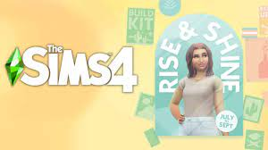
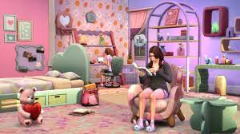

INFANTS! We all know the new age group Infants is coming in 2023. I am excited for this, but I hope The Sims Team has taken their time developing this because we know this type of patch update is very complex and has the ability to create many bugs.
New traits! This Game NEEDS more traits. In comparison to The Sims 3, The Sims 4 lacking tremendously. Personality traits add so much more depth to gameplay. Instead of adding 1-2 new traits with game packs, I believe it would be ideal if The Sims Team worked on a base game update that focused on adding a large amount of traits.Less intrusive fears! The wants and fears system... the wants are great, I love fulfilling my Sims wants. Unfortunately the fears are overbearing, they result in Sims becoming debilitated and incapable of completing task because they are too uncomfortable, and its not helpful that new fears pop up every other day.
 